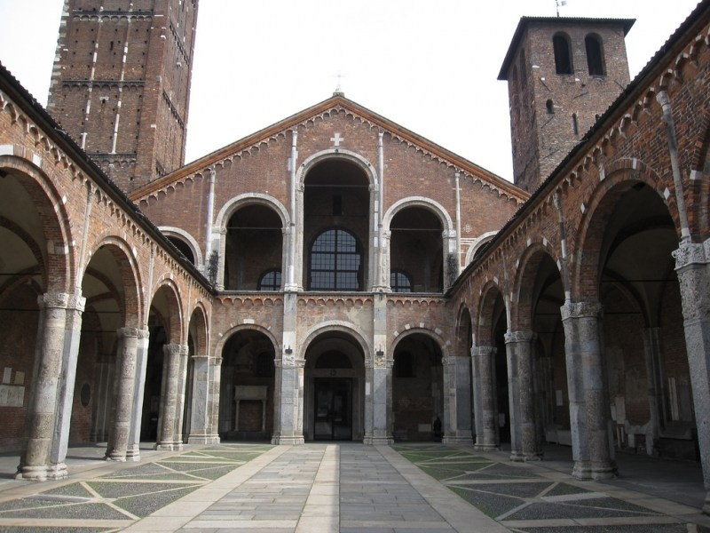
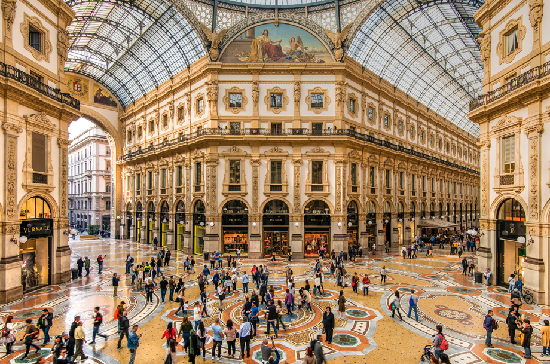
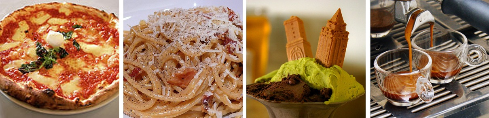

Milán
Milán(en italiano: Milano, y en dialecto milanés: Milàn) es la mayor área metropolitana de Italia y el segundo municipio de Italia por población, capital de la Ciudad metropolitana de Milán y de la región de Lombardía. Se encuentra ubicada en la llanura padana, una de las regiones más desarrolladas de Italia. En 2008, el PIB de la ciudad, fue estimado por el INSEE en 366 mil millones de euros, el segundo de Europa después de la región de París.
Milán, como capital económica e industrial de Italia, tiene el aspecto y las características de una metrópolis moderna: rascacielos (célebre el rascacielos Pirelli, construido en 1959), edificios de cristal y metal y grandes almacenes. Su inconmensurable patrimonio artístico es uno de los mayores de Italia y de Europa, contando con cientos de iglesias monumentales antiguas y museos tan fundamentales para la historia del arte como la Pinacoteca de Brera, uno de los mayores museos de Europa, fundada en 1809 por Napoleón Bonaparte como hermano italiano del Louvre. Destaca también la obra maestra de Leonardo da Vinci, la pintura mural "La Última Cena" y los muchos monumentos románicos (sobre todo iglesias y basílicas) que hacen de Milán la capital del primer románico, llamado también románico lombardo.
| País | Italia |
| Región | Lombardía |
| Superficie | 181,67 km2 |
| Población | 1.351.562 hab. |
| Gentilicio | Milanés, -esa |
| Clima | Mediterráneo |
| Humedad | Alta |
| Precipitación | 945 mm |
Historia
Milán fue fundada por los celtas del norte italiano con el nombre de Medhelan alrededor del año 400 a. C.3, siendo más tarde conquistada por los romanos en 222 a. C., quienes la llamaron Mediolanum. Una de las explicaciones etimológicas más extendidas considera que estos nombres significan «tierra del medio», bien porque la ciudad se encuentra entre los Alpes y los Apeninos,4 o bien porque se halla en el centro de la llanura de Lombardía, entre dos importantes ríos: Tesino y Adda.5
Desde el periodo romano, el desarrollo económico milanés se vio favorecido por la situación en que se encuentra la ciudad, cruce entre las arterias de comunicación principales de la zona del Po.
En el año 292 d.C.3 pasó a ser capital del Imperio romano, y posteriormente, tras su división, del Imperio romano de Occiente entre los años 395 y 402 d.C.6. En 450 la ciudad fue saqueada por los hunos.

En la edad media, tras la caída del Imperio romano de Occidente Milán, al igual que el resto de Italia, fue ocupada por hérulos y ostrogodos. La región en torno a Milán tuvo una de las principales concentraciones de asentamientos ostrogodos en Italia.7 En 539, durante las Guerras Góticas entre bizantinos y ostrogodos, el jefe ostrogodo Uraia saqueó la ciudad, exterminando y esclavizando a su población, y arrasando completamente sus murallas.8 Fue finalmente tomada por el general bizantino Narsés, quien la reconstruyó sin lograr devolverle su antiguo esplendor.9 En el 569, la ciudad fue conquistada por los lombardos,10 quienes la mantuvieron hasta 774, cuando pasó a manos de Carlomagno.
A finales de siglo VIII, Milán logró recuperar su antigua prosperidad. En estos momentos la ciudad era gobernada por arzobispos, que más tarde fueron perdiendo el poder en beneficio de la nobleza. De su mano, la ciudad se volvió próspera e importante en el siglo XI. En 1162 fue arrasada por Federico I Barbarroja, aunque se recuperó y venció a este en 1176 en la batalla de Legnano, junto al resto de la Liga Lombarda. De esta manera comenzó un nuevo periodo de prosperidad. Entre 1277 y 1447 la ciudad estuvo bajo poder de los Visconti. Durante la peste negra del siglo XIV, Milán fue uno de los pocos lugares de Europa que no fue alcanzado por la epidemia, porque el obispo ordenó que emparedaran las tres primeras casas a las que afectó. Los muertos, los enfermos y los sanos quedaron atrapados en su interior sin distinción. El mayor auge de la ciudad fue alcanzado por Gian Galeazzo Visconti, duque de la ciudad entre 1351 y 1402.
En el Renacimiento, durante el siglo XV, el ducado de Milán fue gobernado por las familias Visconti (hasta 1447) y Sforza (a partir de 1450), quienes mantenían a su servicio a artistas de la talla de Leonardo da Vinci y Bramante.
A comienzos del siglo XVI los Valois, casa reinante en Francia, reclamaron sus derechos sobre Milán. El periodo más largo de su dominación se produjo entre 1515 y 1525, durante el reinado de Francisco I de Francia. Después de la derrota francesa en la batalla de Pavía en 1525, Milán pasó a ser posesión española bajo la autoridad del emperador Carlos V. El dominio español perduró hasta 1713, año en que por el Tratado de Utrecht la ciudad se cede a Austria.
Al comienzo del Siglo XIX, tras la Revolución francesa es ocupada por Napoleón. Posteriormente la ciudad se convirtió en uno de los principales centros del nacionalismo italiano, reclamando su independencia y la unificación italiana.
En 1859, Austria cedió su control al Reino de Piamonte-Cerdeña, el cual dos años más tarde se convertiría en el Reino de Italia.
En 1877 se inaugura la famosa Galería Víctor Manuel II, pionera de los modernos centros comerciales y la expansión de la arquitectura del hierro.
En el Siglo XX, Milán fue el centro de la historia de Italia. Fue sede de la Exposición Universal de 1906.
Fue ciudad símbolo del socialismo: entre otros, el centro de divulgación principal del Partido Socialista Italiano, el periódico Avanti!, establece aquí su sede. Milán fue también la cuna del movimiento fascista, que fue fundado el 23 de marzo de 1919 con el nombre de Movimento dei Fasci di Combattimento. Además, el primer programa del movimiento fascista fue en la piazza San Sepolcro.
Pese a ser considerada la ciudad emblema de la Resistencia, Milán fue capital de la República de Saló, el último reducto del gobierno fascista. El 25 de abril, fiesta nacional italiana de la liberación de la ocupación nazi y del régimen fascista, celebra la sublevación general partisana ocurrida en dicho día de 1945 y que supuso la liberación de la ciudad tras la Segunda Guerra Mundial.
En la segunda mitad del siglo, Milán fue uno de los motores de la reconstrucción industrial y cultural del país. En Milán se produjeron algunas de las mayores manifestaciones y enfrentamientos derivados del 68 italiano y también fue testigo del primer episodio de la llamada estrategia de la tensión: la masacre de la piazza Fontana del 12 de diciembre de 1969.
En el último cuarto de siglo la ciudad ha sido, en lo bueno y en lo malo, el centro de la política italiana con la subida al gobierno de la clase dirigente milanesa del PSI-guiada por Bettino Craxi- al gobierno italiano, seguida del escándalo de Tangentopoli y más tarde con la llegada al gobierno del empresario milanés Silvio Berlusconi, que lideró una coalición de centro-derecha.
Geografía
Se encuentra al oeste de Lombardía; cubre una superficie de 1982 km2 y cuenta con una población de 3 775 765 habitantes. La ciudad metropolitana de la cual es capital consta de 134 municipios (comuni). En los diez años que van entre 1991 y 2001, el comune de Milán perdió 113 084 habitantes (8.3 %).
Milán está cruzada al este por el Río Lambro que fluye en dirección sur lamiendo el aeródromo y el aeropuerto de Linate, y por el Río Seveso que cruza la ciudad subterráneamente desde los años 1930, cuando fue cubierto para facilitar la ampliación de la ciudad. Los dos están conectados por los Navigli, canales que en su tramo en superficie caracterizan una zona de tiendas y bares.
Gastronomía
La comida de Italia es variada. Refleja la variedad cultural de sus regiones así como la diversidad de su historia. La cocina italiana, está incluida dentro de la denominada gastronomía mediterránea y es imitada y practicada en todo el mundo. Es muy común que se conozca la gastronomía de Italia por sus platos más famosos, como la pizza, la pasta y el risotto, pero lo cierto es que es una cocina donde se reflejan los abundantes olores y sabores del mediterráneo de Italia.
Se trata de una cocina con fuerte carácter tradicional, variada gracias a cada una de sus regiones y heredera de largas tradiciones, que ha sabido perpetuar recetas antiguas como la pizza, plato Nápoles por excelencia o la que hoy en día puede degustarse en cualquier lugar del mundo ``trattoria del Italia septentrional.
Un menú tradicional en Italia consiste en diversas fases, cabe pensar que la Pizza en la mayoría de los casos, en Italia, se considera un plato único (piatto único).
El menú típico consta como mínimo de cuatro platos: antipasto, primo piatto, secondo piatto y dolce, es decir, entremeses, primer y segundo plato y postre. El antipasto suele estar formado por pequeñas exquisiteces tales como uvas carnosas y otras miniaturas.
Uno de los postres tradicionales es el helado (gelato), además del tiramisú, elaborado con uno de los quesos italianos típicos: el mascarpone. En Nápoles existe el babà (dulce con ron), mezclado con diferentes cremas y de diferentes sabores. También se encuentra el zabaglione, a base de huevo, marsala, azúcar y naranja.
